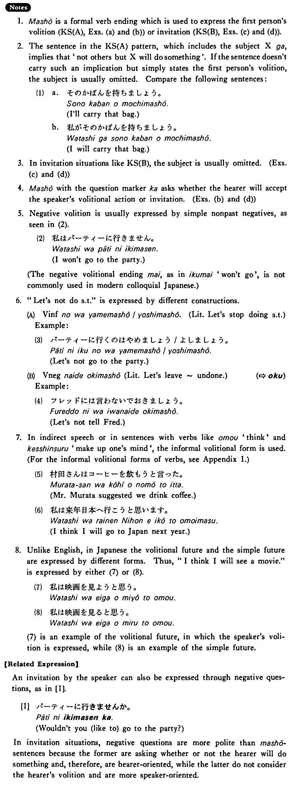

←
DoJG
→
ましょう
(B. 240)
Example sentences
(ksa).
私が彼に話し
ましょう
。
I will talk to him.
(ksb).
映画に行き
ましょう
。
Let's go to a movie.
(a).
私達が手伝い
ましょう
。
We will help you.
(b).
私が行き
ましょう
か。
Shall I go there?
(c).
ビールを飲み
ましょう
。
Let's drink beer.
(d).
車で行き
ましょう
か。
Shall we go by car?
Formation
Vます
ましょう
話し
ましょう
I/we will talk; let’s talk
食べ
ましょう
I/we will eat; let’s eat
